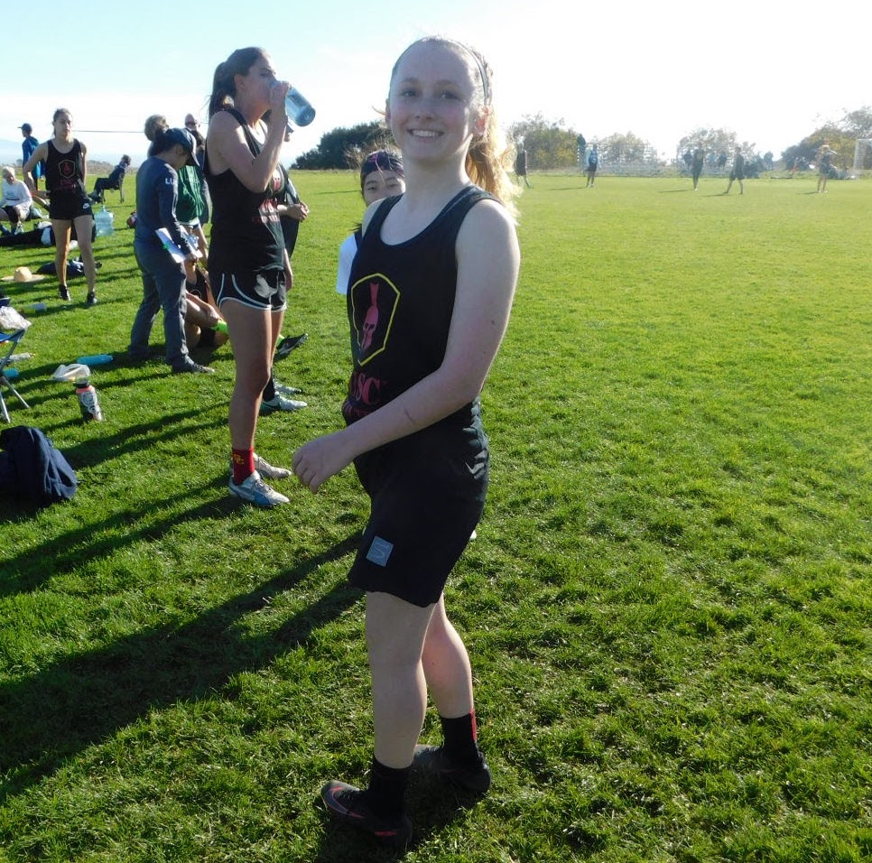
Major: Mechanical Engineering
Hometown: Seattle, WA
Song to be played after you score? Something along the lines of "We Are The Champions" by Queen
Favorite Tourney Snack: BBQ chips or bananas
Pre-Tournament Ritual: Drinking a lot of gatorade and eating BBQ chips
Would you rather fight 100 duck-sized horses or one horse-sized duck? 100 duck-sized horses
Lauren "Astro" Park (#2)
Year: FreshmanMajor: Mechanical Engineering
Hometown: Seattle, WA
Song to be played after you score? Something along the lines of "We Are The Champions" by Queen
Favorite Tourney Snack: BBQ chips or bananas
Pre-Tournament Ritual: Drinking a lot of gatorade and eating BBQ chips
Would you rather fight 100 duck-sized horses or one horse-sized duck? 100 duck-sized horses
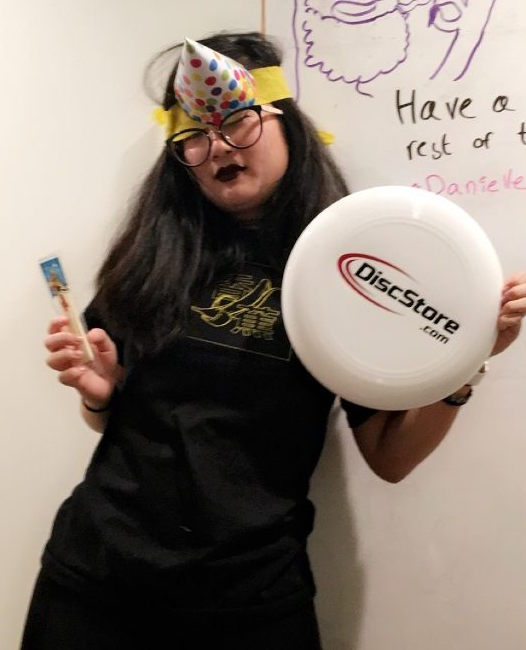
Major: Media Arts and Practice
Hometown: Cross River, NY
Song to be played after you score? "Tunak Tunak Tun" (more of a pump up song)
Favorite Tourney Snack: Townhouse pita chips
Pre-Tournament Ritual: Question my ability to do anything Would you rather fight 100 duck-sized horses or one horse-sized duck? 100 duck sized horses- easy to SQUASH
Jessica "Yoshi" Li (#3)
Year: FreshmanMajor: Media Arts and Practice
Hometown: Cross River, NY
Song to be played after you score? "Tunak Tunak Tun" (more of a pump up song)
Favorite Tourney Snack: Townhouse pita chips
Pre-Tournament Ritual: Question my ability to do anything Would you rather fight 100 duck-sized horses or one horse-sized duck? 100 duck sized horses- easy to SQUASH
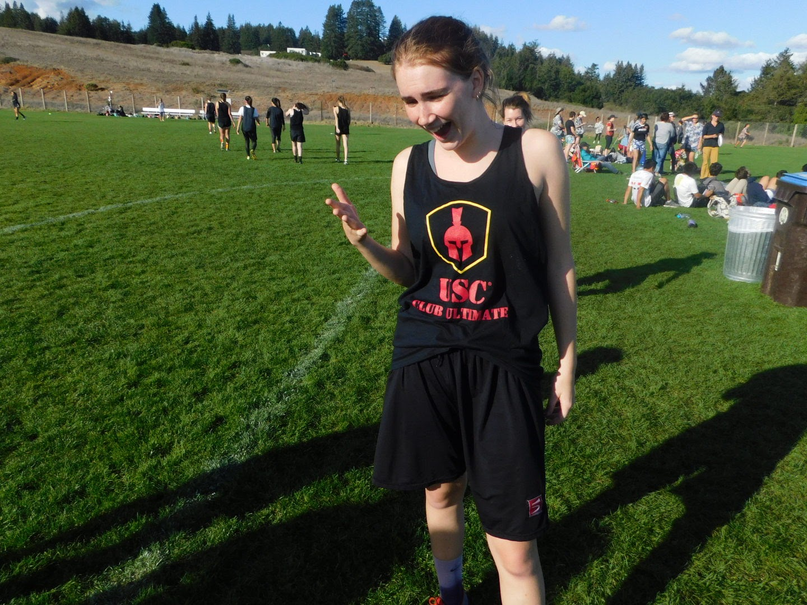
Major: Vocal Jazz
Hometown: Seattle, WA
Song to be played after you score? Blame it on the Boogie - Michael Jackson
Favorite Tourney Snack: Grapes!
Pre-Tournament Ritual: Dabbing and screaming Would you rather fight 100 duck-sized horses or one horse-sized duck? 100 duck sized horses they'd probably be cute and funny
Lila "TBD" Forde (#6)
Year: FreshmanMajor: Vocal Jazz
Hometown: Seattle, WA
Song to be played after you score? Blame it on the Boogie - Michael Jackson
Favorite Tourney Snack: Grapes!
Pre-Tournament Ritual: Dabbing and screaming Would you rather fight 100 duck-sized horses or one horse-sized duck? 100 duck sized horses they'd probably be cute and funny
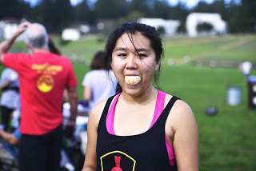
Major: Accounting/Psychology minor
Hometown: Rockville, MD
Song to be played after you score? Who Gon Stop Me - Jay Z and Kanye West
Favorite Tourney Snack: Free field bagels
Pre-Tournament Ritual: Coffee and sunscreen Would you rather fight 100 duck-sized horses or one horse-sized duck? Horse sized duck
Jade "Vulture" Ye (#7)
Year: SeniorMajor: Accounting/Psychology minor
Hometown: Rockville, MD
Song to be played after you score? Who Gon Stop Me - Jay Z and Kanye West
Favorite Tourney Snack: Free field bagels
Pre-Tournament Ritual: Coffee and sunscreen Would you rather fight 100 duck-sized horses or one horse-sized duck? Horse sized duck
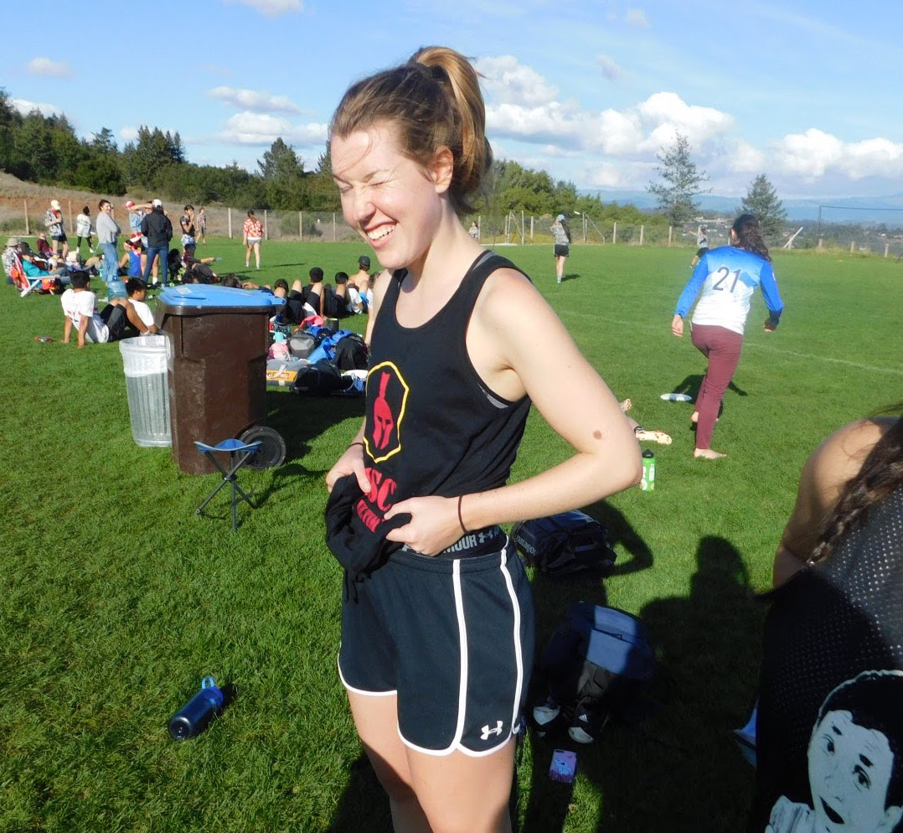
Major: Education
Hometown: Pasadena, CA
Song to be played after you score? Water Me - Lizzo
Favorite Tourney Snack: Orange Slices
Pre-Tournament Ritual: Pee, probably twice Would you rather fight 100 duck-sized horses or one horse-sized duck? 100 duck-sized horses (when I first responded it auto-corrected to dick-sized horses)
Annie "Maximilius Pad" (#8)
Year: Grad StudentMajor: Education
Hometown: Pasadena, CA
Song to be played after you score? Water Me - Lizzo
Favorite Tourney Snack: Orange Slices
Pre-Tournament Ritual: Pee, probably twice Would you rather fight 100 duck-sized horses or one horse-sized duck? 100 duck-sized horses (when I first responded it auto-corrected to dick-sized horses)
Claire "PUG" Oliva (#9)
Year: Grad StudentMajor: Education
Hometown: Pacific Palisades, CA
Song to be played after you score? Love Story- Taylor Swift
Favorite Tourney Snack: Pasta of any sort
Pre-Tournament Ritual: Inhale as much pasta as physically pasta-ble Would you rather fight 100 duck-sized horses or one horse-sized duck? My pugs and I will easily beat 100 horse-sized ducks
Kara "Buzz" Mota (#11)
Year: FreshmanMajor: Computer Science
Hometown: Cerritos, CA
Song to be played after you score? The A Team - Ed Sheeran
Favorite Tourney Snack: Gushers
Pre-Tournament Ritual: Make sure I have my cleats in my bag Would you rather fight 100 duck-sized horses or one horse-sized duck? 100 horse sized ducks
Hannah "Humphrey" Oh (#12)
Year: FreshmanMajor: Psychology + Computer Science
Hometown: Bellevue, WA
Song to be played after you score? We're All In This Together from High School Musical
Favorite Tourney Snack: Canned pineapple chunks, grapes
Pre-Tournament Ritual: Double Dutch braids Would you rather fight 100 duck-sized horses or one horse-sized duck? One horse-sized duck
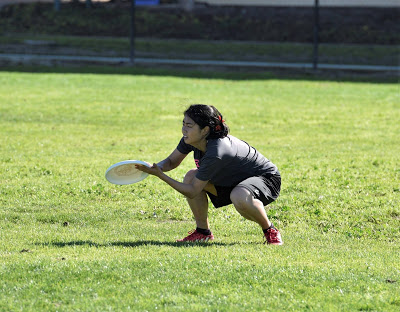
Major: Industrial and Systems Engineering
Hometown: Portland, OR
Song to be played after you score? "Chicken Noodle Soup" - Kidz Bop
Favorite Tourney Snack: Apples and peanut butter
Pre-Tournament Ritual: Late-night laundry Would you rather fight 100 duck-sized horses or one horse-sized duck? Horse-sized duck but either would overwhelm me
Jolene "Noodle" Liu (#13)
Year: JuniorMajor: Industrial and Systems Engineering
Hometown: Portland, OR
Song to be played after you score? "Chicken Noodle Soup" - Kidz Bop
Favorite Tourney Snack: Apples and peanut butter
Pre-Tournament Ritual: Late-night laundry Would you rather fight 100 duck-sized horses or one horse-sized duck? Horse-sized duck but either would overwhelm me

Brianne "The Hulk" Low (#14)
Year: JuniorMajor: Chemical Engineering
Hometown: South Pasadena, CA
Song to be played after you score? Beginning of I Want You Back by The Jackson 5 :)
Favorite Tourney Snack: Goldfish and dried mangos
Pre-Tournament Ritual: Drink water Would you rather fight 100 duck-sized horses or one horse-sized duck? 100 duck-sized horses for sure
Kate "TBD" Montanez (#16)
Year: SophomoreMajor: Environmental Studies
Hometown: Fairfield, CT
Song to be played after you score? Ain't No Mountain High Enough
Favorite Tourney Snack: Extra Toasty Cheez-Its
Pre-Tournament Ritual: Hydration Nation, Visualization, PGP Would you rather fight 100 duck-sized horses or one horse-sized duck? 100 duck-sized horses my dude
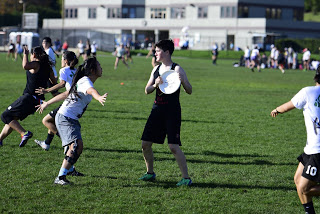
Major: Computer Science
Hometown: Corvallis, OR
Song to be played after you score? You just got dunked on by Froggy Fresh
Favorite Tourney Snack: Carrots
Pre-Tournament Ritual: Oatmeal Would you rather fight 100 duck-sized horses or one horse-sized duck? One horse sized duck. I’m more likely to lose, but it would sure be an adventure.
Katie "Stork" Moreno (#17)
Year: SophomoreMajor: Computer Science
Hometown: Corvallis, OR
Song to be played after you score? You just got dunked on by Froggy Fresh
Favorite Tourney Snack: Carrots
Pre-Tournament Ritual: Oatmeal Would you rather fight 100 duck-sized horses or one horse-sized duck? One horse sized duck. I’m more likely to lose, but it would sure be an adventure.
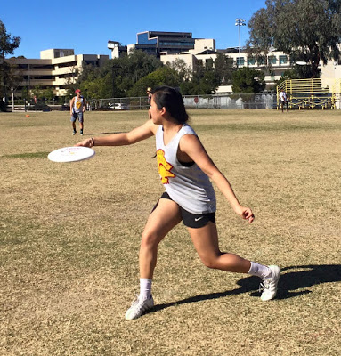
Major: Biochemistry/Spanish minor
Hometown: Portland, OR
Song to be played after you score? All Night Longer
Favorite Tourney Snack: Pita crackers, vegetable chips
Pre-Tournament Ritual: Throwing with draco, reading Harry Potter to karrot Would you rather fight 100 duck-sized horses or one horse-sized duck? Definitely 100 duck-sized horses
Sophia "Orca" Zhou (#18)
Year: JuniorMajor: Biochemistry/Spanish minor
Hometown: Portland, OR
Song to be played after you score? All Night Longer
Favorite Tourney Snack: Pita crackers, vegetable chips
Pre-Tournament Ritual: Throwing with draco, reading Harry Potter to karrot Would you rather fight 100 duck-sized horses or one horse-sized duck? Definitely 100 duck-sized horses

Rachel "Karrot" Litz (#19)
Year: JuniorMajor: Economics/Mathematics
Hometown: Golden, CO
Song to be played after you score? Smooth Jazz
Favorite Tourney Snack: Water or fruit
Pre-Tournament Ritual: Listen to Orca read Harry Potter Would you rather fight 100 duck-sized horses or one horse-sized duck? I don't want to hurt any animal
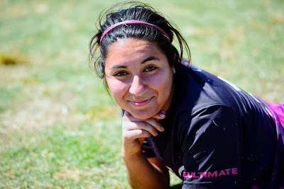
Major: Mechanical Engineering
Hometown: Glendora, CA
Song to be played after you score? X Gon' Give it to You - DMX
Favorite Tourney Snack: Salt and Vinegar Chips
Pre-Tournament Ritual: Some filthy rap Would you rather fight 100 duck-sized horses or one horse-sized duck? Not a fighter, so I'll herd the duck-sized horses
Alyssa "Tattoo" Perez (#22)
Year: SeniorMajor: Mechanical Engineering
Hometown: Glendora, CA
Song to be played after you score? X Gon' Give it to You - DMX
Favorite Tourney Snack: Salt and Vinegar Chips
Pre-Tournament Ritual: Some filthy rap Would you rather fight 100 duck-sized horses or one horse-sized duck? Not a fighter, so I'll herd the duck-sized horses
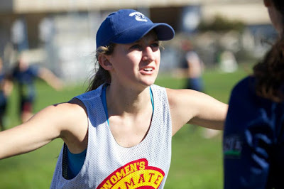
Major: Industrial and Systems Engineering
Hometown: Atlanta, GA
Song to be played after you score? Something ratchet
Favorite Tourney Snack: Gluten-free carby foods
Pre-Tournament Ritual: PGP Would you rather fight 100 duck-sized horses or one horse-sized duck? 100 horse-sized ducks
Alana "Carbo" Archer (#23)
Year: SeniorMajor: Industrial and Systems Engineering
Hometown: Atlanta, GA
Song to be played after you score? Something ratchet
Favorite Tourney Snack: Gluten-free carby foods
Pre-Tournament Ritual: PGP Would you rather fight 100 duck-sized horses or one horse-sized duck? 100 horse-sized ducks
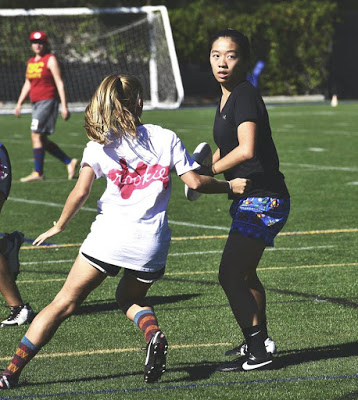
Major: Computer Science/Jazz minor
Hometown: Yorkown Heights, NY
Song to be played after you score? Choices (Yup)
Favorite Tourney Snack: Flavor blasted goldfish
Pre-Tournament Ritual: Sleep, water, visualization Would you rather fight 100 duck-sized horses or one horse-sized duck? Def the mini horses, you could kick em out of the way
Catherine "Draco" Chung (#25)
Year: JuniorMajor: Computer Science/Jazz minor
Hometown: Yorkown Heights, NY
Song to be played after you score? Choices (Yup)
Favorite Tourney Snack: Flavor blasted goldfish
Pre-Tournament Ritual: Sleep, water, visualization Would you rather fight 100 duck-sized horses or one horse-sized duck? Def the mini horses, you could kick em out of the way
Sydney "TBD" Mayer (#28)
Year: FreshmanMajor: Biomedical Engineering
Hometown: Denver, Colorado
Song to be played after you score? Girl on Fire by Alicia Keys
Favorite Tourney Snack: Dried Mango
Pre-Tournament Ritual: Triple check everything I have packed because I always forget things, and add more snacks every time I look my stuff over! Would you rather fight 100 duck-sized horses or one horse-sized duck? One horse-sized duck for sure
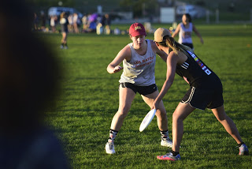
Major: Mechanical Engineering
Hometown: Los Gatos, CA
Song to be played after you score? Magnolia- Playboi Carti
Favorite Tourney Snack: Target "monster" brand trail mix
Pre-Tournament Ritual: Applying sunscreen Would you rather fight 100 duck-sized horses or one horse-sized duck? I would attempt to domesticate the horse-sized duck
Caitlin "Kenny G" Buckley (#73)
Year: SophomoreMajor: Mechanical Engineering
Hometown: Los Gatos, CA
Song to be played after you score? Magnolia- Playboi Carti
Favorite Tourney Snack: Target "monster" brand trail mix
Pre-Tournament Ritual: Applying sunscreen Would you rather fight 100 duck-sized horses or one horse-sized duck? I would attempt to domesticate the horse-sized duck
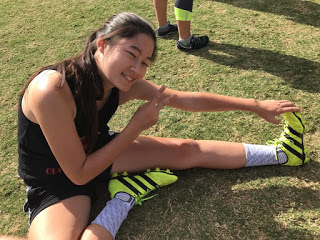
Major: Film and TV Production
Hometown: Canton, MA
Song to be played after you score? JELLO - BROCKHAMPTON
Favorite Tourney Snack: Flavor Blasted Goldfish
Pre-Tournament Ritual: Listen to 80s music Would you rather fight 100 duck-sized horses or one horse-sized duck? 100 duck-sized horses
Mia “Crunch” Tess (#99)
Year: SophomoreMajor: Film and TV Production
Hometown: Canton, MA
Song to be played after you score? JELLO - BROCKHAMPTON
Favorite Tourney Snack: Flavor Blasted Goldfish
Pre-Tournament Ritual: Listen to 80s music Would you rather fight 100 duck-sized horses or one horse-sized duck? 100 duck-sized horses